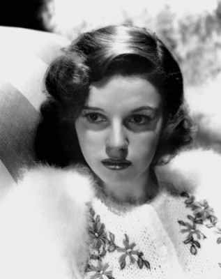
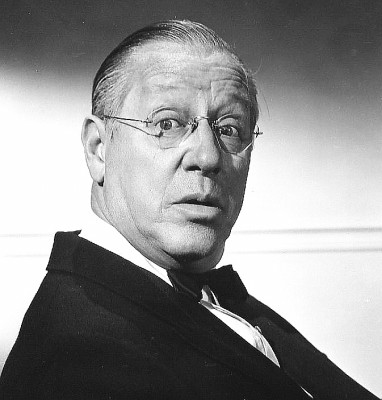
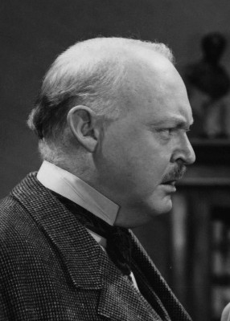
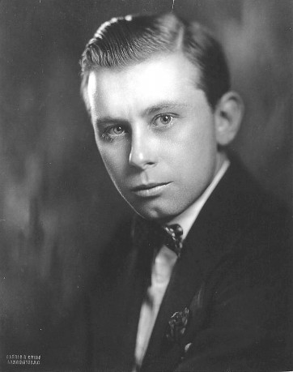

#11419 Ein Neuer Stern am Himmel
Alternativ: A Star Is Born (Englischer Titel)
Auszeichnungen: für 6 Oscars nominiert 2 GoldenGlobes gewonnen


 IMDB-Wertung: 7.7 / 10
IMDB-Wertung: 7.7 / 10  Tomatometer: 97
Tomatometer: 97  Metascore: 89
Metascore: 89 
Schauspieler Norman Maine befindet sich auf dem absteigenden Ast. Auf einer Wohltätigkeitsgala wird er von der Nachwuchssängerin Esther gerade noch davor bewahrt, sich betrunken völlig zum Narren zu machen. Er findet Gefallen an Esther und beschließt, ihr zu helfen. Esthers kometenhafter Aufstieg an den Hollywood-Himmel nimmt seinen Lauf, die beiden heiraten. Da es mit dem trinkenden Norman immer weiter bergab geht, entscheidet sich Esther schließlich, ihre Karriere für seine Pflege zu opfern. Doch Norman ringt sich zu einem drastischen Schritt durch.
Jahr: 1954
Dauer: 167 Minuten
FSK: 6
Land: USA Studio: Warner Bros.Tonspuren: DD5.1 - ,
Untertitel:
Auflösung: 1080p (1920x760) Größe: 9359 MB
Genre: Drama, Liebe, Musical
Regisseur:  George Cukor
George Cukor
Drehbuch: Moss Hart, Dorothy Parker, Alan Campbell, Robert Carson, William A. Wellman
Soundtrack: Ray Heindorf
Darsteller:
-  Judy Garland als Esther Blodgett / Vicki Lester
 James Mason als Norman Maine
James Mason als Norman Maine- Jack Carson als Matt Libby
- Charles Bickford als Oliver Niles
- Tommy Noonan als Danny McGuire
- Lucy Marlow als Lola Lavery
- Amanda Blake als Susan Ettinger
-  Irving Bacon als Graves
- James Brown als Glenn Williams
 Leon Alton als Usher (uncredited)
Leon Alton als Usher (uncredited)- Phil Arnold als Agent #3 (uncredited)
 Gertrude Astor als Racetrack Spectator (uncredited)
Gertrude Astor als Racetrack Spectator (uncredited)-  Don Beddoe als Studio Executive at Premiere (uncredited)
 Willis Bouchey als McBride (uncredited)
Willis Bouchey als McBride (uncredited)- Paul Brinegar als Man at Funeral (uncredited)
- Sheila Bromley als Shrine Auditorium Reporter (uncredited)
 Paul Bryar als Bartender at Racetrack (uncredited)
Paul Bryar als Bartender at Racetrack (uncredited)- Chick Chandler als Man in Car at Diner (uncredited)
- Lauren Chapin als Little Girl at Boarding House (uncredited)
 Heinie Conklin als Benefit Comedy Team Member (uncredited)
Heinie Conklin als Benefit Comedy Team Member (uncredited)- Blythe Daley als Ms. Nora Fusselow (uncredited)
- Eddie Dew als Assistant Director at Train Station (uncredited)
 Franklyn Farnum als Ray (uncredited)
Franklyn Farnum als Ray (uncredited) Frank Ferguson als Judge George J. Barnes (uncredited)
Frank Ferguson als Judge George J. Barnes (uncredited) Bess Flowers als Academy Awards Attendee (uncredited)
Bess Flowers als Academy Awards Attendee (uncredited)- Almeda Fowler als Malibu Party Guest (uncredited)
 Nacho Galindo als José Rodriguez (uncredited)
Nacho Galindo als José Rodriguez (uncredited)- Wilton Graff als Shrine Auditorium Emcee (uncredited)
- Charles Halton als Paymaster #1 (uncredited)
- Joseph Hamilton als Agent #2 (uncredited)
-  Percy Helton als William Gregory (uncredited)
 Louis Jean Heydt als Ocean Scene Director (uncredited)
Louis Jean Heydt als Ocean Scene Director (uncredited) Al Hill als Shrine Auditorium Photographer (uncredited)
Al Hill als Shrine Auditorium Photographer (uncredited) Stuart Holmes als Melancholy Baby Number Spectator (uncredited)
Stuart Holmes als Melancholy Baby Number Spectator (uncredited) Olin Howland als Charley (uncredited)
Olin Howland als Charley (uncredited) Bob Hoy als Soundman (uncredited)
Bob Hoy als Soundman (uncredited)- Bob Jellison als Eddie (uncredited)
- Jack Kenney als Nightclub Man #1 (uncredited)
- Nancy Kulp als Esther's Neighbor (uncredited)
 Carl M. Leviness als Academy Awards Attendee (uncredited)
Carl M. Leviness als Academy Awards Attendee (uncredited) Carey Loftin als Signboard Man #2 (uncredited)
Carey Loftin als Signboard Man #2 (uncredited)- Frank Marlowe als Shrine Auditorium Photographer (uncredited)
 Mae Marsh als Malibu Party Guest (uncredited)
Mae Marsh als Malibu Party Guest (uncredited) Strother Martin als Delivery Boy (uncredited)
Strother Martin als Delivery Boy (uncredited)- Louis Mason als Doorman (uncredited)
 Philo McCullough als Academy Awards Attendee (uncredited)
Philo McCullough als Academy Awards Attendee (uncredited)- Don McKay als Dancer - 'Gotta Have Me Go With You' Number (uncredited)
 Harold Miller als Benefit Attendee (uncredited)
Harold Miller als Benefit Attendee (uncredited) Mort Mills als Makeup Man (uncredited)
Mort Mills als Makeup Man (uncredited) Charles Morton als Shrine Auditorium Photographer (uncredited)
Charles Morton als Shrine Auditorium Photographer (uncredited)
Datei: X:\1950-1959\Neuer Stern am Himmel, Ein (1954, FSK6, 1920x760).mkv seit 03.07.2019
Festplatte: Gemischt-01+Anime
 Es gibt insgesamt 141 Filme in der Gruppe '1950-1959'
Es gibt insgesamt 141 Filme in der Gruppe '1950-1959'